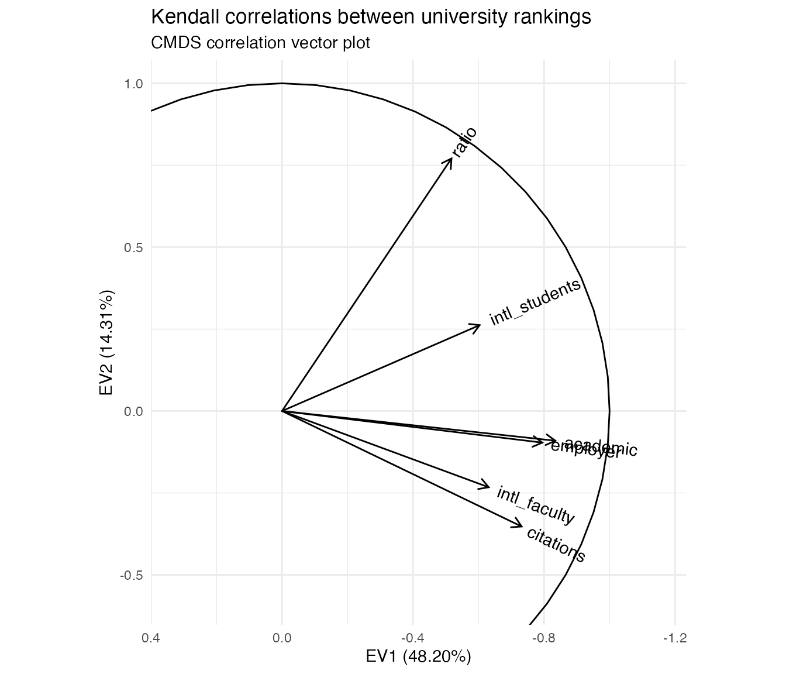
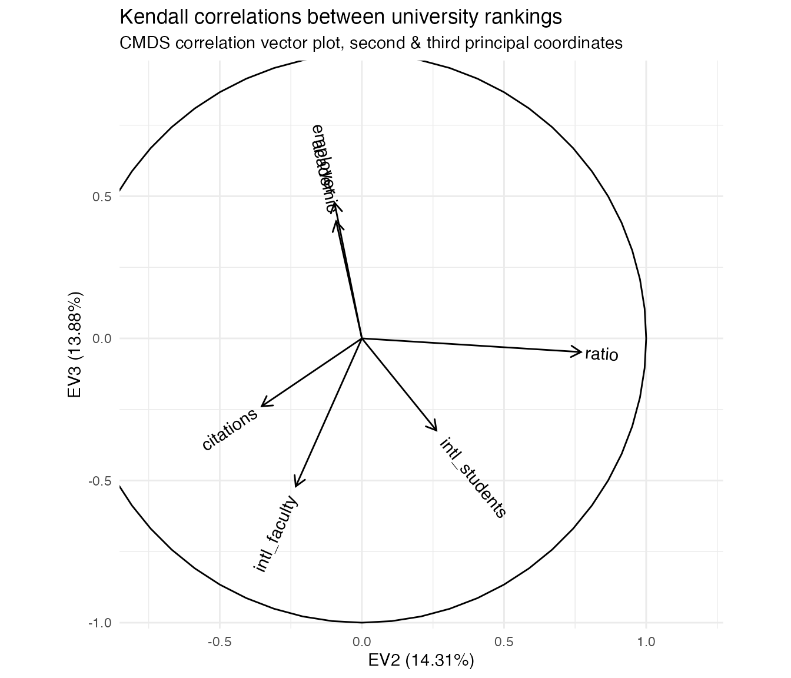

This vignette demonstrates that covariance and correlation data can be compressed and visualized using multidimensional scaling using the same principles and machinery as for distance and similarity data. I argue that these geometric representations have interpretative advantages over other methods and should be more widely used.
dimension reduction of geometric data
Because ordination is grounded in geometric data analysis, it is easiest and most straightforward on naturally geometric data. For example, the mineral compositional measurements analyzed by Freestone, Gorin–Rosen, and Hughes (2000) consists of five primary (and several secondary) concentrations for each of 68 artifacts. While all the variables lie on the same (percentage) scale, they vary at different absolute rates; in order to represent the cases (artifacts) geometrically we might separately center and scale them. The most basic ordination method, principal components analysis (PCA), computes a singular value decomposition \(X = U D V^\top\) of the centered and scaled data matrix \(X \in \mathbb{R}^{n\times p}\):
data(glass, package = "ordr")
x <- scale(glass[, c("SiO2", "Al2O3", "FeO", "MgO", "CaO")],
center = TRUE, scale = TRUE)
s <- svd(x)
r <- length(s$d)The matrix factors \(U \in \mathbb{R}^{n\times r}\) and \(V \in \mathbb{R}^{p\times r}\) arise from eigendecompositions of \(X X^\top\) and of \(X^\top X\), respectively, which have the same set of eigenvalues \(\lambda_1,\ldots,\lambda_r\). The square roots of these eigenvalues make up the diagonal matrix \(D \in \mathbb{R}^{r\times r}\). The conventional PCA biplot uses principal coordinates for the cases, given by the rows of \(U D\), and standardized coordinates for the variables, given by the rows of \(V\).
The columns of \(U = \left[\,u_1\,\cdots\,u_r\,\right]\) and \(V = \left[\,v_1\,\cdots\,v_r\,\right]\) comprise the eigenvectors of \(X X^\top\) and of \(X^\top X\). They are orthonormal, which means that \(U^\top U = I_r = V^\top V\) and that the total variance (called inertia) in each matrix is \(\sum_{j=1}^{r}{ {v_j}^2 } = r = \sum_{j=1}^{r}{ {v_j}^2 }\). Meanwhile, the diagonal \(D\) contains all of the inertia of the centered and scaled data matrix \(X\):
# inertia of the (scaled) data
sum(x^2)## [1] 335
# inertia of the case and variable factors
sum(s$u^2)## [1] 5
sum(s$v^2)## [1] 5
# inertia of the diagonal factor
sum(s$d^2)## [1] 335For the (2-dimensional, i.e. planar) biplot, this inertia is conferred on the cases (converting standardized coordinates to principal coordinates) so that the planar distances between the points in the plot representing the cases are approximately equal to their Euclidean distances in \(X\). Because the biplot only accommodates two principal components (it is a projection onto a subset of orthogonal coordinates), the planar distances underestimate the true distances. Here is a scatterplot of the true distances and their biplot approximations:
# distances between cases
x.dist <- dist(x)
# distances between cases (principal coordinates)
s.dist <- dist(s$u[, 1:2] %*% diag(s$d[1:2]))
# scatterplot
plot(
x = as.vector(x.dist),
y = as.vector(s.dist),
xlim = c(0, 10), ylim = c(0, 10),
asp = 1, pch = 19, cex = .5,
xlab = "Case distances in centered and scaled data",
ylab = "Case point distances in planar biplot"
)
lines(x = c(0, 10), y = c(0, 10))
In contrast, the variables are better understood through their correlations, which are approximately preserved by their standardized coordinates. Writing \(X = [\,y_1\,\cdots\,y_m\,]\) as an array of column variables, the covariance between \(y_i\) and \(y_j\) is proportional to their inner product \[\textstyle \operatorname{cov}(y_i,y_j) = \frac{1}{n} y_i \cdot y_j = \frac{1}{n} \lVert y_i\rVert\lVert y_j\rVert\cos\theta_{ij}\text,\] so that the cosine of the angle \(\theta_{ij}\) between them equals their correlation: \[\cos\theta_{ij} = \frac{\operatorname{cov}(y_i,y_j)}{\sqrt{\operatorname{cov}(y_i,y_i)\operatorname{cov}(y_j,y_j)}/n} = \frac{\operatorname{cov}(y_i,y_j)}{\sigma_i\sigma_j} = r_{ij}\]
Here the cosines between the vectors in the biplot are plotted against the variable correlations \(r_{ij}\) in the centered and scaled data. While the vectors are shorter in the biplot for the same reason that distances are shorter, their consines may be larger or smaller depending on their respective coordinates in the remaining coordinates.
# correlations between variables
x.cor <- cor(x)
# magnitudes of variable vectors
s.len <- apply(s$v[, 1:2] %*% diag(s$d[1:2]), 1, norm, "2")
# cosines between variables (principal coordinates)
s.cor <- (s$v[, 1:2] / s.len) %*% diag(s$d[1:2]^2) %*% t(s$v[, 1:2] / s.len)
# scatterplot
plot(
x = as.vector(x.cor[lower.tri(x.cor)]),
y = as.vector(s.cor[lower.tri(s.cor)]),
xlim = c(-1, 1), ylim = c(-1, 1),
asp = 1, pch = 19, cex = .5,
xlab = "Variable correlations in centered and scaled data",
ylab = "Variable vector cosines in planar biplot"
)
lines(x = c(-1, 1), y = c(-1, 1))
multidimensional scaling of distance data
The faithful approximation of inter-case distances by principal coordinates is the idea behind classical multidimensional scaling (CMDS), which can be applied to a data set of distances \(\delta_{ij},\ 1\leq i\leq j\leq n\) in the absence of coordinates (variables). CMDS produces a set of artificial coordinates for the cases that yield nested best approximations of the inter-case distances in terms of the sum of squared errors. The technique uses the eigendecomposition of a doubly-centered matrix of squared distances, which produces a matrix \(U \Lambda^{1/2}\) whose first \(r\) coordinates—for any \(r\leq n\)—minimize the variance of \((U \Lambda^{1/2}) (U \Lambda^{1/2})^\top - \Delta = U \Lambda U^\top - \Delta\), where \(\Delta = (\delta_{ij}) \in \mathbb{R}^{n\times n}\), to obtain the approximation. The columns of \(U \Lambda^{1/2}\) are then called principal coordinates, and the first \(r\) most faithfully recover the \(\delta_{ij}\) using points in \(\mathbb{R}^r\) of any possible \(r\). For example, because the road distances between several U.S. cities arise from a roughly 2-dimensional process, the point distances in a CMDS are very close approximations:
d <- as.matrix(UScitiesD)
cent <- diag(1, nrow(d)) - matrix(1/nrow(d), nrow(d), nrow(d))
d.cent <- -.5 * cent %*% (d^2) %*% cent
d.cmds <- svd(d.cent)
d.coord <- d.cmds$u[, 1:2] %*% diag(sqrt(d.cmds$d[1:2]))
# scatterplot
plot(
x = as.vector(UScitiesD),
y = as.vector(dist(d.coord)),
xlim = c(0, max(UScitiesD)), ylim = c(0, max(UScitiesD)),
asp = 1, pch = 19, cex = .5,
xlab = "City road distances",
ylab = "Point distances in planar CMDS"
)
lines(x = c(0, max(UScitiesD)), y = c(0, max(UScitiesD)))
In practice, the goal of CMDS is usually to produce a scatterplot in which the distances \(\sqrt{(x_j-x_i)^2+(y_j-y_i)^2}\) between the points that represent the \(n\) cases approximate their original distances \(\delta_{ij}\). In this case, the artificial coordinates approximately recover the geographic arrangement. By chance, this CMDS rotated the conventional cardinal directions by about \(\pi\) radians (though at least the map is recognizable from above rather than below the surface of the Earth):
plot(
d.coord, pch = NA, asp = 1,
xlab = "First principal coordinate", ylab = "Second principal coordinate"
)
text(d.coord, labels = rownames(d), cex = .9)
multidimensional scaling of covariance data
The faithful approximation of inter-variable correlations by the angles between their coordinate vectors provides a dual CMDS procedure. Suppose we have data that consist not of distances between cases but of covariances \(\operatorname{cov}(y_i,y_j),\ 1\leq i\leq j\leq p\) between variables. Again the data are coordinate-free, so PCA is inapplicable. But were the data derived from a (not necessarily centered or scaled) case–variable matrix \(X\), then the covariance matrix \(C=(\operatorname{cov}(y_i,y_j))\) would have been obtained as \(C=\frac{1}{n}X^\top X\). This, up to scalar, is the matrix whose eigenvectors would be given by \(V\) in the SVD \(X = U D V^\top\). Therefore, we can obtain artificial coordinates for these variables that approximate what we know of their geometry—thinking of the variables as unknown vectors whose magnitudes and angles are encoded in \(C\)—via an eigendecomposition \(C = V \Lambda V^\top\): Take \(Y = V \Lambda^{1/2} \in \mathbb{R}^{p\times r}\), so that \(Y^\top Y \approx C\).
While covariances of the unscaled glass measurements are not meaningful, they can be used to validate the technique. Again because the eigendecomposition is intrinsically ordered by variance, the first \(r\) eigenvectors provide the most faithful \(r\)-dimensional approximation; i’ll take \(r=2\) in anticipation of a biplot:
# covariances and standard deviations
c <- cov(x)
s <- diag(sqrt(diag(c)))
# eigendecomposition of covariance matrix
c.eigen <- eigen(c)
# artificial coordinates
c.coord <- c.eigen$vectors[, 1:2] %*% diag(sqrt(c.eigen$values[1:2]))
# scatterplot
c.inner <- c.coord %*% t(c.coord)
plot(
x = as.vector(c[lower.tri(c)]),
y = as.vector(c.inner[lower.tri(c.inner)]),
xlim = range(c[lower.tri(c)]), ylim = range(c[lower.tri(c)]),
asp = 1, pch = 19, cex = .5,
xlab = "Measurement covariances in unscaled data",
ylab = "Vector inner products in planar CMDS"
)
lines(x = range(c[lower.tri(c)]), y = range(c[lower.tri(c)]))
Thus, whereas CMDS of cases approximates distances, CMDS of variables approximates covariances. This equips us with an analogous visualization technique for correlation data: Represent each variable \(y_i\) as a unit vector \(\hat{y}_i\) in such a way that their angle cosines \(\cos\theta_{ij}\) equal their correlations \(r_{ij}\), then project these vectors onto the plane in which their variance is maximized. This is exactly how variables are commonly represented in row-principal PCA biplots, by the equivalence of \(V\) in the SVD \(X = U D V^\top\) with \(E\) in the eigendecomposition \(X^\top X = E \Lambda E^\top\). Here is the result for the five compositional measurements on the glass artifacts:
c <- cor(glass[, c("SiO2", "Al2O3", "FeO", "MgO", "CaO")])
c.eigen <- eigen(c)
c.coord <- c.eigen$vectors[, 1:2] %*% diag(sqrt(c.eigen$values[1:2]))
plot(
c.coord, pch = NA, asp = 1,
xlab = "First principal coordinate", ylab = "Second principal coordinate"
)
arrows(0, 0, c.coord[, 1L], c.coord[, 2L])
text(c.coord, labels = rownames(c), cex = .9)
We can immediately see that the concentrations of silica and ferrous oxide are highly correlated, that they are anticorrelated with that of quicklime, and that all of these vary independently (in the statistical sense) of those of aluminium oxide and magnesia, which are anticorrelated with each other.
In this setting, we could have obtained this visualization directly from the case–variable data \(X\), as in PCA. The technique becomes uniquely useful when we have correlations without underlying coordinates.
use case: rankings of universities
A natural use case for CMDS of variables is the analysis of multiple rankings of the same set of objects in terms of their concordance. Rankings’ concordance is often measured using rank correlations such as Kendall’s \(\tau\), which may be general correlation coefficients in the sense proposed by Kendall but are not associated with an underlying geometry. In this setting, there is no original \(X\) nor Euclidean coordinates. Nevertheless, we can use CMDS to represent these rankings as unit vectors in Euclidean space whose pairwise cosines approximate their rank correlations!
A real-world example is provided by the Quacquarelli
Symonds World University Rankings, which include rankings of
hundreds of world universities along six dimensions: academic
reputation, employer reputation, faculty–student ratio, citations per
faculty, international faculty ratio, and international student ratio.
QS weight these rankings differently in their overall assessment, but
our analysis will compare the rankings to each other across
universities, ignoring these weights. The subset qswur_usa
installed with ordr include U.S.-based universities
ranked in the years 2017–2020, their
classifications by QS, and their six integer-valued rankings.
(Scores used to generate the rankings are included with the QS data
files but omitted from qswur_usa.)
## # A tibble: 612 × 13
## year institution size focus res age status rk_academic rk_employer
## <int> <chr> <fct> <fct> <fct> <int> <chr> <int> <int>
## 1 2017 MASSACHUSETTS I… M CO VH 5 B 6 4
## 2 2017 STANFORD UNIVER… L FC VH 5 A 5 5
## 3 2017 HARVARD UNIVERS… L FC VH 5 B 1 1
## 4 2017 CALIFORNIA INST… S CO VH 5 B 23 90
## 5 2017 UNIVERSITY OF C… L FC VH 5 B 13 47
## 6 2017 PRINCETON UNIVE… M CO VH 5 B 10 32
## 7 2017 YALE UNIVERSITY L FC VH 5 B 9 12
## 8 2017 CORNELL UNIVERS… L FC VH 5 B 21 49
## 9 2017 JOHNS HOPKINS U… L FC VH 5 B 41 139
## 10 2017 UNIVERSITY OF P… L FC VH 5 B 33 35
## # ℹ 602 more rows
## # ℹ 4 more variables: rk_ratio <int>, rk_citations <int>,
## # rk_intl_faculty <int>, rk_intl_students <int>For this example, i’ll focus only on rankings for the year 2020 for which all rankings were available. This leaves me with only 38 universities, so my conclusions must be taken with caution! Since the rankings were subsetted from the full international data set, they are not contiguous (some integers between rankings never appear). To resolve this, i’ll also recalibrate the rankings by matching each vector of ranks to the vector of its sorted unique values:
qswur_usa %>%
filter(year == 2020L) %>%
select(institution, starts_with("rk_")) %>%
mutate_at(
vars(starts_with("rk_")),
~ match(., sort(unique(as.numeric(.))))
) %>%
filter_at(vars(starts_with("rk_")), ~ ! is.na(.)) ->
qswur_usa2020
print(qswur_usa2020)## # A tibble: 38 × 7
## institution rk_academic rk_employer rk_ratio rk_citations rk_intl_faculty
## <chr> <int> <int> <int> <int> <int>
## 1 MASSACHUSETTS … 3 2 8 4 1
## 2 STANFORD UNIVE… 2 3 5 7 2
## 3 HARVARD UNIVER… 1 1 17 5 8
## 4 CALIFORNIA INS… 12 17 1 2 3
## 5 UNIVERSITY OF … 9 11 19 22 20
## 6 PRINCETON UNIV… 7 7 35 1 26
## 7 CORNELL UNIVER… 11 13 40 9 5
## 8 UNIVERSITY OF … 14 12 11 31 12
## 9 YALE UNIVERSITY 6 4 2 46 17
## 10 COLUMBIA UNIVE… 8 8 10 47 51
## # ℹ 28 more rows
## # ℹ 1 more variable: rk_intl_students <int>This subset of universities is now contiguously ranked along the six dimensions described above. The Kendall correlation \(\tau_{ij}\) between two rankings measures their concordance. To calculate it, every pair of universities contributes either \(+1\) or \(-1\) according as the rankings \(i\) and \(j\) place that pair in the same order, and the sum is scaled down by the number of pairs \({n\choose 2}\) so that the result lies between \(-1\) and \(1\). We interpret \(\tau_{ij}=1\) as perfect concordance (the rankings are equivalent), \(\tau_{ij}=-1\) as perfect discordance (the rankings are reversed), and \(\tau_{ij}=0\) as independence (the rankings are independent).
- academic reputation (
rk_academic), - employer reputation (
rk_employer) - faculty–student ratio (
rk_ratio) - citations per faculty (
rk_citations) - international faculty ratio (
rk_intl_faculty) - international student ratio (
rk_intl_students)
These not variations on a single theme (measures of the same construct), like different measures of guideline adherence or positive affect. Though they do all seem potentially sensitive to a university’s resources, including finance and prestige. I intuit that the two reputation indexes should be positively correlated, and that the two international personnel ratios should be as well. I also wonder if the faculty–student ratio might be anti-correlated with the number of citations per faculty, separating more research-focused institutions from more teaching-focused ones.
correlation heatmap
Heatmaps are commonly, perhaps most commonly, used to visualize
correlation matrices, and they make a useful contrast to the CMDS
correlation plot. Below i use heatmap() to produce a basic
correlation heatmap, but the blog
post version of this vignette uses the corrplot
package to more elegant effect. What can be learned from a glance at
this plot? While the rankings by academic and employer reputations are
highly concordant, those by international faculty and student ratios are
less so. The faculty–student ratio and faculty citation rankings have
the weakest concordance of any pair, but they are still positively
correlated.
corr <- cor(select(qswur_usa2020, starts_with("rk_")), method = "kendall")
heatmap(corr, scale = "none")
This visualization is useful, but it’s very busy: To compare any pair of rankings, i have to find the cell in the grid corresponding to that pair and refer back to the color scale to assess its meaning. I can’t rely on the nearby cells for context, because they may be stronger or weaker than average and skew my interpretation. For example, the visibly weak associations between the faculty–student ratio and other rankings (the third row/column) happen to be arranged so that the slightly stronger among them, with the two reputational variables, are sandwiched between the even stronger associations between the two reputational rankings and between them and the faculty citations ranking. Meanwhile, this ranking’s weaker associations are sandwiched between more typical, but still comparatively stronger, associations. A different ordering of the variables might “obscure” these pattern and “reveal” others, which forces the analyst to choose between these emphases rather than allowing the viewer to assess them on an even footing.
The plot is also strictly pairwise: Every correlation between two rankings occupies its own cell—two, in fact, making almost half of the plot duplicative. This means that a subset analysis of, say, three rankings requires focusing on three cells at the corners of a right triangle while ignoring all the surrounding cells. This is not an easy visual task. It would be straightforward to create a new plot for any subset, but then the larger context of the remaining rankings would be lost.
Finally, the color and size scales themselves are less than desirable in a plot of data that all lie on a single scale (\(-1 \leq r \leq 1\)). Contrast this to a histogram, which also visualizes a single data type (count) but uses only one axis to represent count (the other to represent value) and does not require color at all. In general, plots of simple data should use very few scales (aesthetic mappings)—not only to make plots more readable but also to allow for additional scales that highlight additional data properties.
correlation monoplot
CMDS of variables offers a natural alternative visualization, which Gower, Gardner–Lubbe, and le Roux (2011) call a “correlation monoplot” in that it consists of but one of the two layers of a PCA or other biplot. As with CMDS of cases, the point isn’t to overlay the case scores and variable loadings from a singular value decomposition, but to use the scores or loadings alone to endow the cases or variables with a Euclidean geometry they didn’t originally have. To that end, i’ll plot the variables as vectors with tails at the origin and heads at their principal coordinates \(Y = V \Lambda^{1/2}\), with a unit circle included for reference:
eigen_ord(corr) %>%
as_tbl_ord() %>%
augment_ord() %>%
mutate_rows(metric = stringr::str_remove(name, "rk_")) %>%
confer_inertia(1) ->
c_eigen
c_eigen %>%
ggbiplot() +
theme_minimal() +
geom_unit_circle() +
geom_rows_vector(aes(label = metric)) +
scale_x_reverse(expand = expansion(add = .4)) +
scale_y_continuous(expand = expansion(add = .3)) +
ggtitle("Kendall correlations between university rankings",
"CMDS correlation monoplot")
With respect to the pairwise correlations, the biplot is significantly less precise: Though the vectors all have unit length in \(\mathbb{R}^r\) (\(r\leq p=6\)), their projections onto the first two principal coordinates are much shorter, indicating that much of the geometric configuration requires additional dimensions to represent. Indeed, these coordinates capture only \(48.2\%+14.3\%=62.5\%\) of the inertia in the full, six-dimensional eigendecomposition. This means that the angles between the vectors must be interpreted with caution: For example, it looks like the academic and employer reputation rankings are extremely correlated, but the apparent alignment of the vectors could be an artifact of the projection, when in fact they “rise” and “fall” in opposite directions along the remaining principal coordinates. The correlation heatmap, by comparison, leaves no such ambiguity.
However, the biplot far surpasses the heatmap at parsimony: Each variable is represented by a single vector, and the angle cosines between the variable vectors roughly approximate their correlations. For instance, the rankings based on international student and faculty ratios have correlation around \(\cos(\frac{\pi}{4})=\frac{1}{\sqrt{2}}\), corresponding to either explaining half the “variance” in the other—not technically meaningful in the ranking context but a useful conceptual anchor. Meanwhile, the faculty–student ratio ranking is nearly independent of the faculty citation ranking, contrary to my intuition that these rankings would reflect a reverse association between research- and teaching-oriented institutions. The convenience of recognizing correlations as cosines may be worth the significant risk of error, especially since that error (the residual \(37.5\%\) of inertia) can be exactly quantified.
Moreover, the principal coordinates of the variable vectors indicate their loadings onto the first and second principal moments of inertia—the two dimensions that capture the most variation in the data. For example, the first principal coordinate is most aligned with the two reputational rankings, suggesting that a general prestige ranking is the strongest overall component of the several specific rankings. In contrast, the faculty–student ratio and faculty citation rankings load most strongly onto the second principal coordinate, suggesting that the divide between research- and teaching-focused institutions may yet be important to understanding how universities compare along these different metrics. These observations, provisional though they are, would be difficult to discern from the heatmap. More importantly, unlike the secondary patterns visible in the heatmap, these are not artifacts of the layout but arise directly from the (correlational) data.
This last point means that observations made from a correlation monoplot can be validated from the CMDS coordinates. In particular, we can examine the variables’ loadings onto the third principal coordinate, and we can check whether the reputational rankings are aligned or misaligned along it.
## # A tibble: 6 × 8
## EV1 EV2 EV3 EV4 EV5 EV6 metric .element
## <dbl> <dbl> <dbl> <dbl> <dbl> <dbl> <chr> <chr>
## 1 -0.834 -0.0907 0.412 0.0430 -0.0206 0.351 academic active
## 2 -0.795 -0.0964 0.477 -0.0416 -0.181 -0.311 employer active
## 3 -0.517 0.771 -0.0480 0.331 0.158 -0.0372 ratio active
## 4 -0.731 -0.352 -0.239 -0.0278 0.528 -0.0685 citations active
## 5 -0.631 -0.233 -0.521 0.392 -0.352 0.00783 intl_faculty active
## 6 -0.603 0.262 -0.324 -0.665 -0.140 0.0312 intl_students activeBased on the third principal coordinates, the reputational rankings are aligned, as we knew already from the correlation matrix and heatmap. What’s a bit more interesting is that this component seems to separate these two rankings from those having to do with faculty citation rates and the international compositions of the faculty and student body. Based on the decomposition of inertia, this third principal coordinate is nearly as important as the second! It therefore makes sense to plot the two together, in effect examining the residuals after regressing out the first principal coordinate:
c_eigen %>%
ggbiplot(aes(x = 2, y = 3)) +
theme_minimal() +
geom_unit_circle() +
geom_rows_vector(aes(label = metric)) +
scale_x_continuous(expand = expansion(add = .5)) +
scale_y_continuous(expand = expansion(add = .5)) +
ggtitle("Kendall correlations between university rankings",
"CMDS correlation monoplot, second & third principal coordinates")
The primary antitheses of the reputational rankings, after removing the first principal coordinate, are the two rankings based on international composition. The third principal coordinate aligns closely with this axis. This axis is also largely independent of the axis that distinguishes research- from teaching-oriented institutions, which is closely aligned with the second principal coordinate. From my own limited experience, i’d hazard a guess that this reflects two tiers of international representation among students and faculty, one expressed by the most prestigious institutions that recruit highly qualified applicants from all over the world, and the other expressed by institutions that are not especially prestigious but are located in communities or regions with high percentages of international residents.
In sum, we have interpreted the three strongest axes along which the QS rankings vary: (1) overall quality, prestige, and reputation; (2) research versus teaching orientation; and (3) international personnel ratios, which come at some cost to reputation. This is of course a preliminary and amateur analysis! But a visualization scheme that encourages hypothesis generation is worth having on hand.